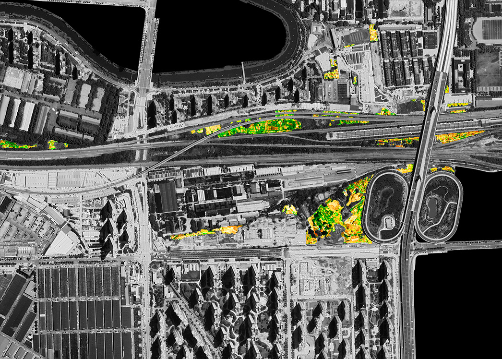

> 王涵晰 | hanxi.wang

Born and raised in Tianjin, China, with international practice, research and teaching experience in North America, Europe, and Asia, Hanxi Wang is an architect, urban geographer, and designer funded by the UK Economic and Social Research Council.
A licensed architect in the state of New York and a LEED accredited professional in sustainable design, Hanxi earned her B.Arch. at Cornell University and a M.Sc. in Nature, Society and Environmental Governance at the University of Oxford.
LinkedIn hanxi.wang.22@ucl.ac.uk> 研究 | research

Through an transdisciplinary approach, Hanxi's work questions dominant narratives of power and agency within the urban environment. In particular, she is interested in informal practices of urban ecology and the complex, sometimes paradoxical ways in which their practitioners negotiate, adopt, or subvert top-down structures of governance to create alternative urban futures. Currently understaking research on her ESRC-funded PhD project Ruralising Urban Wastelands – Homesteads and Subversive Metabolisms in China’s Growing Cities at the University College London, Department of Geography, Hanxi's work have been exhibited and presented internationally, including Cornell University Department of Architecture, Art, and Planning, the 2022 Royal Geographical Society Annual International Conference and the 2023 International Geoscience and Remote Sensing Symposium.
1__Ruralising Urbanisation 2__City Gone Wild> 设计 | design

Hanxi is an architect and designer with over 3 years of international practice experience at leading international design firms in the US, UK, and Japan. Her expertise in sustainable design is rooted in an interest in the entangled relationship between the built and the natural environment, and in particular, a passion to understand the potential of the individual within this entanglement in the form of everyday and grassroots agency. Her work has been included in the Archdaily Best Student Work Worldwide, Rethinking the Future's Best Temporary Structures, and Finalist proposals for the UN Permanent Slavery Memorial International Design Competition.
3__Breaking into Silence 4__The Wetland Guardians of Jean-Lafitte5__Fluid Pavilion
> 教学 | teaching

From 2022-23 Hanxi served as the inaugural Design Teaching Fellow at the Department of Architecture, Art, and Planning, Cornell University, where she taught architectural design as well as seminar in architectural theory and architecture, culture and society. During her time at Cornell, she also coordinated the prestigious annual Preston Thomas Memorial Symposium and Exhibition on FRINGE: New Centers for Architecture and Urbanism with Assistant Professor Leslie Lok
6__ARCH 3308/3408/6308/6408 City, Subversive 7__ARCH 1101/1102 Geologies of Making + ReconfigurationsRuralizing Urbanisation:
Homesteads, Subjectivities, and Subversions in China's Growing Cities
UKRI ESRC Funded PhD Research at University College London+ Master's Dissertation at University of Oxford
China's dramatic urbanization since the 1980s has fundamentally altered the physical, ecological and social dynamics of its cities and landscapes. While scholars have largely focused on the power of the state within this apparently top-down process, this project argues that it is equally important to understand the agency of the individual citizen. Through the phenomenon of chengshi kaihuang ("urban homesteading") this project investigates the emergence of a bottom-up countermovement of urban ruralization that challenges Western conceptions of urban agency and ecology.
Presented at the 2022 Royal Geographical Society Annual International Conference and exhibited at Cornell University Department of Architecture, Art, and Planning

Cities Gone Wild:
Understanding Urban Homesteads Through Remote Sensing
Funded Fellowship Design Research at Cornell University + Remote Sesnsing Research Project at University of Oxford
Through remote sensing analysis of chengshi kaihuang ("urban homesteading"), this study demonstrates that the massive urbanisation of the rural can create a bottom-up countermovement of ruralization. Taking Wuhan as the study area, this study the first to leverage hyperspectral remote sensing data from the Sentinel-2 and Landsat-8 missions in conjunction with machine learning algorithms to study the spatial, temporal, and ecological dynamics of urban homesteading. The study shows that urban homesteading has constituted ~5% of Wuhan’s urban center since 2017.
Presented at the 2023 International Geoscience and Remote Sensing Symposium
Breaking into Silence
College of Architecture, Art, and Planning, Cornell UniversityThere is a story that seem to emerge time and time again within contemporary narratives of crises - where severe lack and severe excess exist paradoxically at the same time. Waste, one of the most dire issues of our time, is marked by this paradox. From food deserts to homelessness, crises of waste frequently originate from the inequitable distribution of resources rooted in underlying social prejudice and discrimination. This dissertation examines the entanglements between three parallel crises, urban dereliction, immigration, and landfill, in a small town called Skive in Mid Jutland, Denmark and proposes an alternative model of urban agency and spacemaking that may modulate the existing entanglements between these three issues from vicious to virtuous.

The Wetland Guardians
of Jean-Lafitte
College of Architecture, Art, and Planning, Cornell UniversityFrom its location at the mouth of the Mississippi River on the US south coast, New Orleans has always been at risk of the devastation caused by hurricanes and cyclones. However within the last century, the erosion of coastal wetlands due to human interference has dramatically increased New Orleans's vulnerability to storms and flooding. In a site where human construction, from levees to oil canals, has nearly decimated the natural ecosystem, this proposal asks how can we rethink the act of construction to not only limit its damage but to enable acts of care between human communities and the environment.
Fluid Pavilion
College of Architecture, Art, and Planning, Cornell UniversityDesigned with only 3 unit types, this experimental pavilion constructed from 213 individual PETG components explores the potential of thermoforming as a structural mechanism that can program memory, elasticity and strength into ordinary sheet plastic. By carefully embedding different types of 3D curvatures into sheet plastic, we were able to calibrate a spectrum of structural properties that made it possible to construct a 8’ tall pavilion from 0.75mm PETG sheets that is simultaneously rigid and fluid.
Published in 2015 Archdaily Best Student Works Worldwide, Rethinking the Future Best Temporary Structures, and Resoluciones Constructivas No Convencionales
City, Subversive
ARCH3308/3408/6308/6408 Architecture Culture and Society+ Theory Seminar at Cornell University
As a profession that has historically been enamored with grand gestures and celebrations of singular figures of genius, architecture is undergoing a drastic shift towards broader community engagement and more inclusive forms of space-making. Yet, in order to create real, radical change and avoid the traps of superficial marketing strategies, it is crucial to take seriously the potential and agency of marginalized, overlooked communities and individuals and understand their existing influence and contributions in creating the urban environment. The goal of the seminar is to learn to understand the city through currently marginalized perspectives, opening up to subaltern, queer, more-than-human, senescent, minor, and other potentially “hidden” ways of understanding the city beyond the dominant academic narrative.
Geologies of Making + Reconfigurations
ARCH1101 + ARCH1102First-Year Architecture Core Design Studios at Cornell University
First-year core design studios in Cornell University's Bachelor of Architecture professional degree program introduces students not only to architectural design but also to the culture of architecture studio, as well as fundamental skills. The first semester studio Geologies of Making aims to challenge students' preconceptions of what architecture is by guiding them to discover form, logic, and composition through observation of geological landforms, exercise abstraction, and creating spatial designs for a visitor's center for said landscape. In the second semester Reconfigurations focuses on the study of regional building traditions to understand how different societies have developed construction techniques and spatial logics to survive and live in harmony with their environment.
.jpeg)